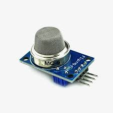
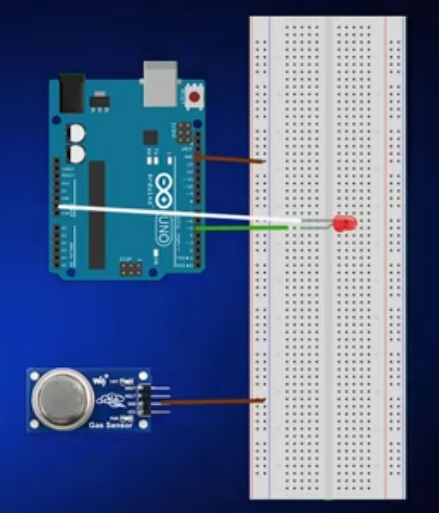
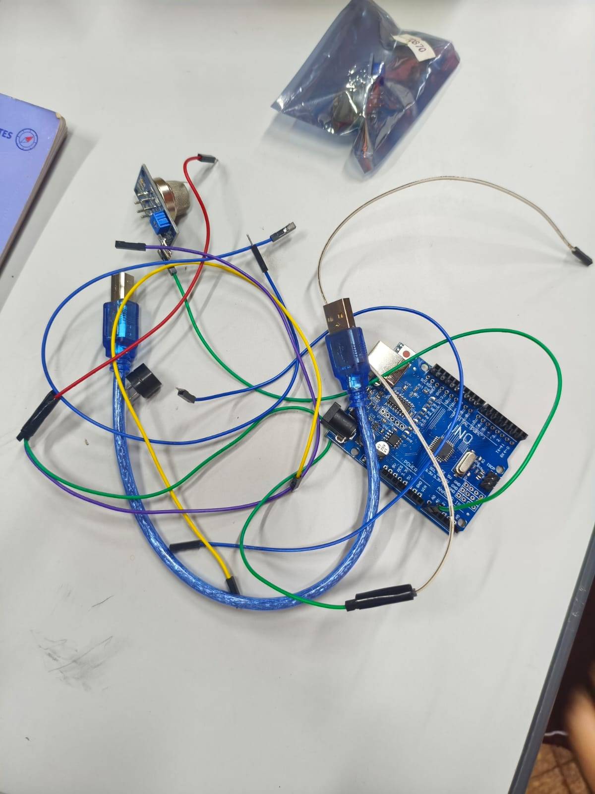
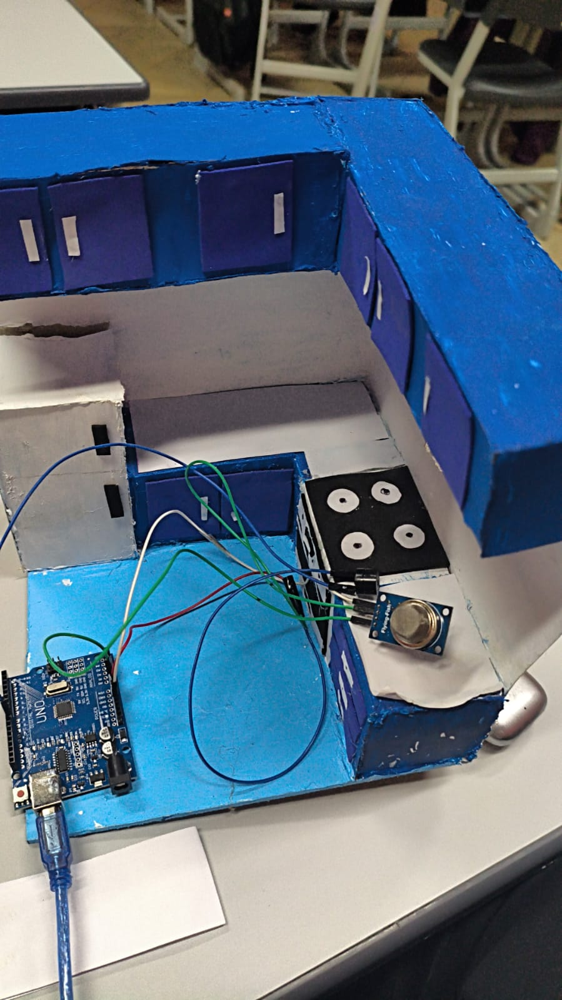

Galería del Prototipo
Imágenes del dispositivo, conexiones y esquemas de montaje

Arduino UNO con módulo sensor

Sensor de gas MQ-6

Esquema de conexiones

Componentes del circuito

Montaje final del dispositivo